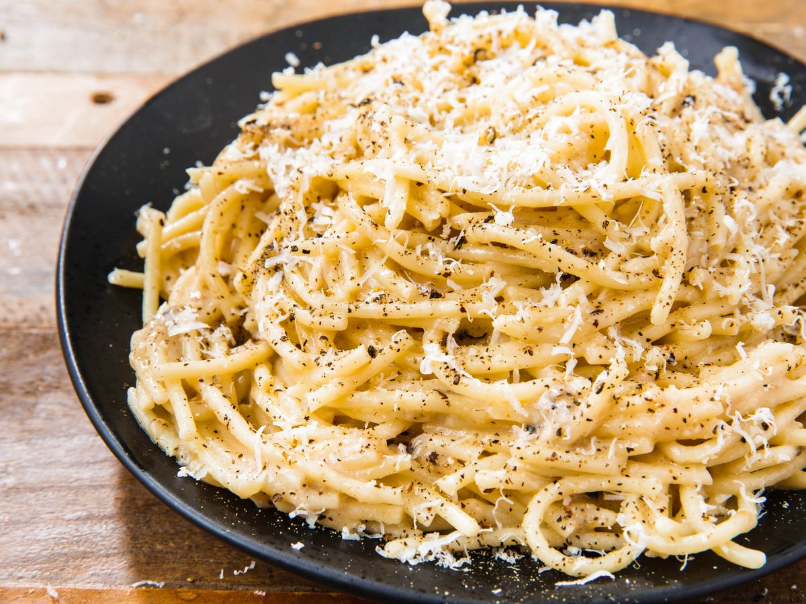

Cacio e Pepe

Cacio e Pepe; the Roman minimalist's mac and cheese
Cacio e Pepe is a pasta dish from the cuisine of the city of
Rome. The dishes name quite literally means cheese and pepper.
In keeping with its name, the dish contains grated Pecorino
Romano cheese and black pepper, together with spaghetti. All
of these ingredients keep for a long time, which made the
dish practical for shepherds without a fixed abode. Rough
surfaced pasta is recommended, to make the sauce adhere well.
Ingredients
- pasta (spaghetti)
- unsalted butter
- freshly ground black pepper
- finely grated Parmigiano-Reggiano
- grated Pecorino Romano
Instructions
- Bring water seasoned with salt to a boil
- Add pasta and reserve small cup of water
- Melt butter and add pepper in saute pan and toast
- Add cup of pasta water to pan and simmer
- Add cooked pasta and remaining butter and cook on low
until butter is melted
- Add Parmigiano-Reggiano and stir until melted
- Remove from heat and stir all together
- Transfer to warm pasta bowls and serve